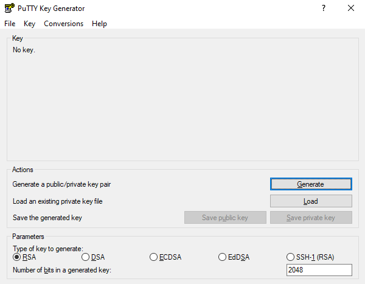
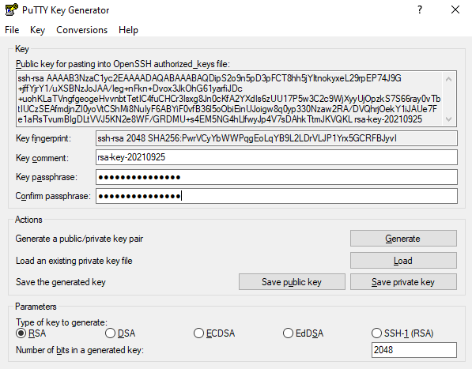

SSH and Bash on Windows
For this class we recommend that you use a virtual machine via virtual box and use the Linux ssh instructions. The information here is just provided for completeness and no support will be offered for native windows support.
Windows users need to have some special software to be able to use the SSH commands. If you have one that you are comfortable with and know how to setup key pairs and access the contents of your public key, please feel free to use it.
On Windows you have a couple of options on running Linux commands such as ssh. At this time it may be worth while to try the OpenSSH Client available for Windows, although it is in beta. If you like to use other methods we have included alternatives.
OpenSSH Client on Windows
software to be able to run it directly from the Windows commandline including PowerShell.
However it is as far as we know not activated by default so you need to follow some setup scripts. Also this software is considered beta and its development and issues can be found at
Fortunately, the software is already distributed with Winodws 10, but
may not yet been activated. What you have to do is to install it by
going to Settings > Apps and click Manage optional features under
Apps & features.
Next, Click on the Add feature. You will be presented with a list in
which you scroll down, till you find OpenSSH Client (Beta). Click on
it and invoke Install.
After the install has completed, you can use the ssh command. Just
type it in the commandshell or PowerShell
Naturally you can now use it just as on Linux or macOS. and use it to login to other resources
see also the MS SSH Guide for the newest up dates.
Due to the availability of SSH on Windows 10, we no longer recommend using Cygwin SSH, PuTTY or Chocolatey. However we kept thise sections here for completness.
GitBash
A realy great tool for Windows is made avalable via (if you use windows we recommend that)
Here you can find gitbash that provides you with a terminal in which you
can natively execute linux commands such as cd, ls and many more. It
also includes ssh and ssh-keygen. which you will need if you want o
interface with Linux machines hosted in a cloud.
You can also enable the Git GUI as you may be used to doing things from GUIs. However soon you will find out why in this class we typicaly do not much via GUIs. However if you like them you can also integrate git in the Windows Explorer. This could be beneficial fo you during development of your project or keep up with what others do on git.
Makefiles on Windows
Makefiles can easily be accessed also on windows while installing gitbash. Please reed to the internet or search in this handbook for more information about gitbash.
:o2: Please contribute to this section on how to install make on wondows natively. Here is some information to start with Make on Windows
Using SSH from Cygwin
One established way of using ssh is from using cygwin.
http://cygwin.com/install.html Cygwin contains a collection of GNU and Open Source tools providing Linux like functionality on Windows. A DLL is available that exposes the POSIX API functionality.
A list of supported commands is available at
https://cygwin.com/packages/package_list.html Please be minded that in order for cygwin to function easily the Windows user name should not include spaces. However, as the setup in windows encourages to use the full name when you buy and setup a machine it may not be convenient to use. However, we just recommend that you create yourself a new username and use this if you like to use cygwin.
You can selectively install from the cygwin setup terminal which software you like to use, obviously you may want to use ssh
SSH from putty
As you will see the process is somewhat cumbersome and when you compare it with the commandline tools available, we do recommend using them instead.
PuTTY allows you to access the SSH, Telnet and Rlogin network protocols from windows.
https://www.chiark.greenend.org.uk/~sgtatham/putty/latest.html Although PuTTY has been out there for many years and served the community well, it is not following the standard ssh command line syntax when invoked from a command shell.
In addition to using ssh, it also provides a copy command.
Putty is best known for its GUI configuration application to manage several machines as demonstrated next. Once you have downloaded it and opened PuTTYgen, you will be presented with a key generator window (see @fig:puttykey).

{kind=link}
To generate a key you click the Generate button which is blue. The
PuTTY Key Generator (see
@fig:puttypass will then ask you to move your mouse around
the program's blank space to generate randomness for your key. You
must enter a Key passphrase and then confirm the passphrase.

{kind=link}
Next you need to save both the public and private keys into a file of
your choice using the Save public key and Save private key buttons.
We suggest you name something that is based on the encryption method, such as
id_rsa.pub and
id_rsa so that you can identify them easily and use a convention that is
widely accepted.
Tip: In case you need to copy the public key into a different program or service,
select the entire public key and copy it
with Control-C. Please note that everything should be copied,
including ssh-rsa. At this time, the public key has been created and copied.
Now you can
use the public key and paste it into a program that may need it.
Chocolatey
Another approach is to use it in Powershell with the help of chocolatey. Other options may be better suited for you and we leave it up to you to make this decision.
Chocolatey is a software management tool that mimics the install experience that you have on Linux and macOS. It has a repository with many packages. The packages are maintained by the community and you need to evaluate security implications when installing packages hosted on chocolatey just as you have to do if you install software on Linux and macOS from their repositories. Please be aware that there could be malicious code offered in the chocolatey repository although the distributors try to remove them.
The installation is sufficiently explained at
https://chocolatey.org/install Once installed you have a command choco and you should make sure you have the newest version with:
Now you can browse packages at
https://chocolatey.org/packages Search for openssh and see the results. You may find different versions. Select the one that most suits you and satisfies your security requirements as well as your architecture. Lets assume you chose the Microsoft port, than you can install it with:
Naturally, you can also install cygwin and ptty over chocolatey. A list of packages can be found at
https://chocolatey.org/packages Packages of interest include
- emacs: choco install emacs
- pandoc: choco install pandoc
- LaTeX: choco install miktex
- jabref: choco install jabref
- pycharm: choco install pycharm-community
- lyx: choco install lyx
- python 3: choco install python
- pip: choco install pip
- virtualbox: choco install virtualbox
- vagrant: choco install vagrant
Before installing any of them evaluate if you need them and identify security risks.